專案背景
「關鍵評論網」陸續進行改版計劃，中文版已進行首頁視覺翻新，而國際版同步設計語彙。以中文版作為參照，重構目標是保持現有架構、最少程度的網站程式改動、優化動線與視覺、確保各語系版本統一。同時為了慶祝10週年紀念，品牌LOGO也將更新，展現全新形象。
設計規劃
依照品牌端、設計端、開發端 3 大面向，列出痛點及優化方案：
-
Style Guide 不夠完整，色彩延伸性與字體應用缺乏規則
遵循品牌精神，建立擴充性高且完整的 Style Guide，提升設計系統泛用性
-
顏色對比度不足、沒有空值狀態設計、襯線字體在內文數位閱讀體驗不佳
提升對比度到AA級、設計合理的空值狀態、調整字體，提升閱讀體驗
-
視覺原則3大方向
-
品牌識別性
採用「關鍵評論網」全新 LOGO、品牌藍色及風格，增強品牌識別印象。
-
提升易用性
透過資訊層級明確化、色彩簡化、元件狀態，達到視覺降噪與一致性，讓使用者可以更直觀的操作。
-
未來擴充性
不僅針對現況的格局及細節作調整，也為未來擴充考慮。
色彩計畫
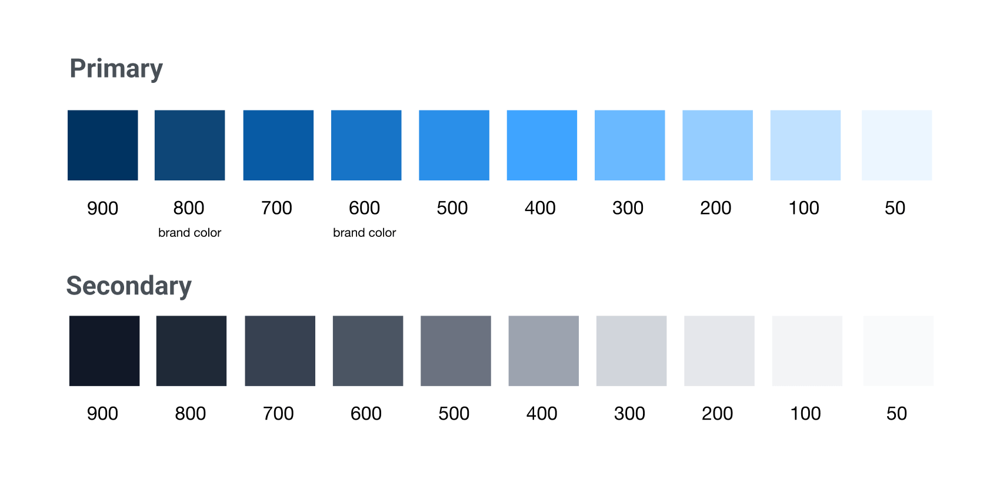
Color Scale
原先只有兩個品牌色、灰階為中性灰，新版以既有品牌色為基礎擴充色階，而灰階是偏藍色調使整體更和諧。顏色越單純越能讓網站豐富的內容被凸顯出來。
字體計畫
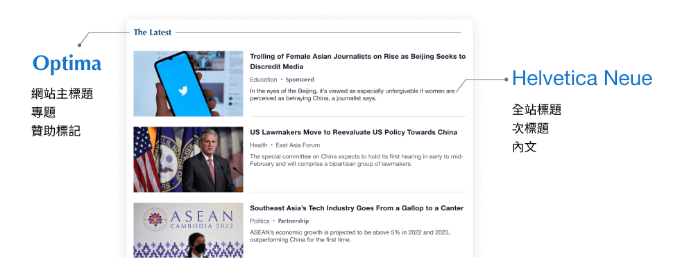
標題與內文字體組合
以文章為主的內容網站，字體考量特別重要。為了傳達專業性、信賴感和穩定度，採用無襯線字體作為基礎字體，讓數位閱讀更舒適，同時在區塊性標題上選用有襯線字體以保留專業嚴肅調性。此外特別考慮作業系統支援性，選用內建字體提升載入速度。
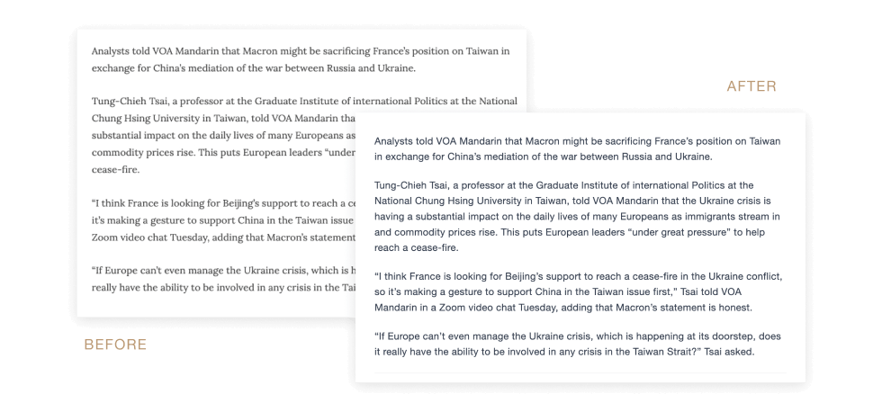
文章頁字體改版前後比對
首頁改版
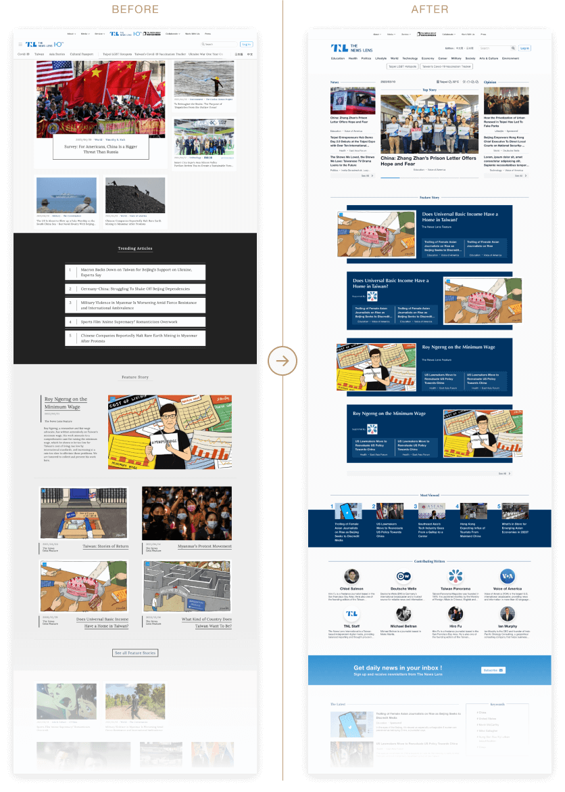
首頁改版前後比對
國際版首頁改版目標是保持與中文版相同的視覺風格，根據語系的特殊需求進行區塊的增減。同時也會納入中文版改版後的使用者回饋和網站需求，針對這些重要回饋進行重點優化。
選單優化
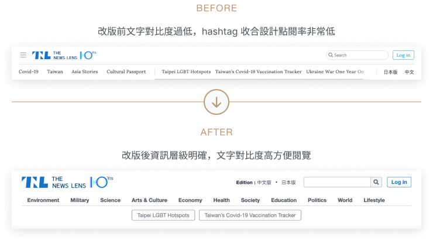
選單改版前後比對
舊版選單層級不明確、擴充性不足，新版依照權重重新規劃，增加擴充性。以區分權重同時考慮未來擴充需求為目標進行重新分類項目、優化排序、字體粗細區分、擴充性考量等改進。
文章列表優化
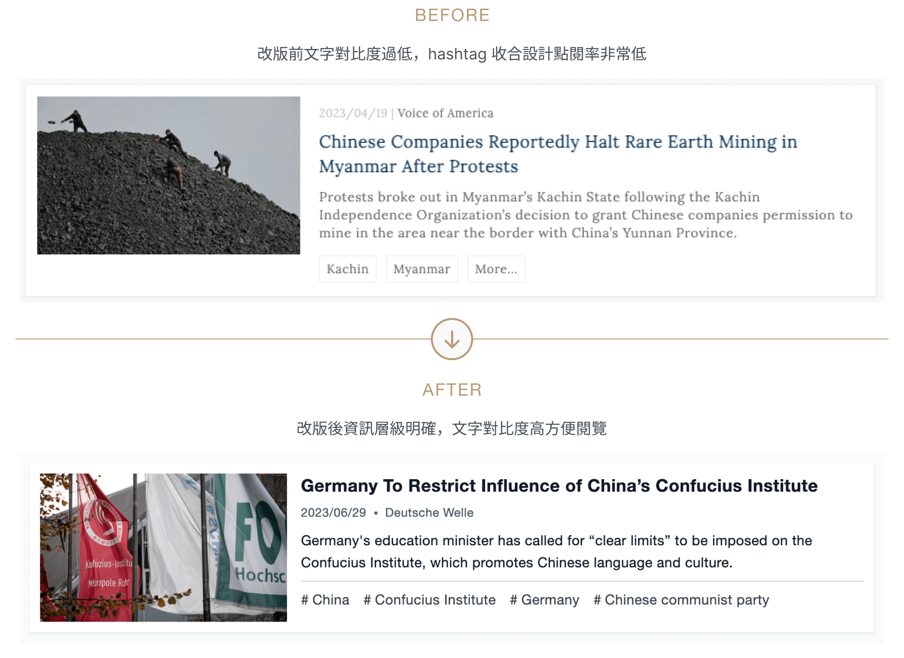
整體差異不大，主要著重於卡片的區分資訊權重為目標進行統一圖片比例、提高顏色對比度、Hashtag容易被忽略等問題優化，其次為統一列表頁卡片數量。
頁碼優化
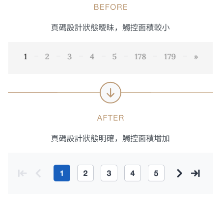
舊版頁碼有裝飾線設計，在手機版及千位數的時寬度會爆版，且當前頁碼狀態不明顯，故針對頁碼進行千位數頁碼設計、強調當前頁碼狀態的調整並增大觸控面積的優化。
文章頁優化
左右欄的佈局在RWD及未來擴充時內容呈現容易受限，改成單欄佈局擴充彈性更佳。
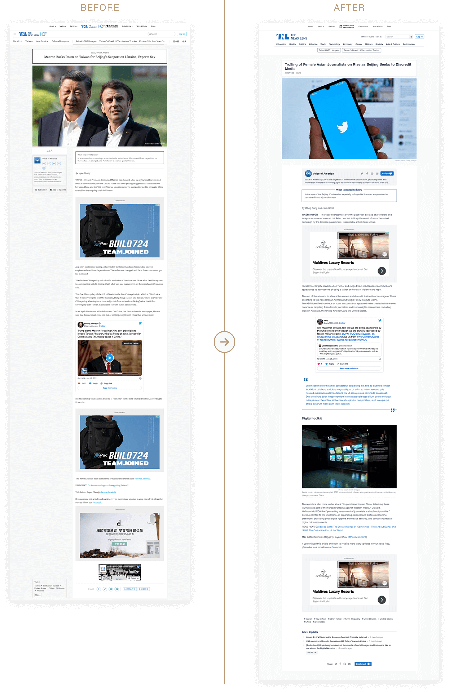
文章頁改版前後比對
作者卡片優化
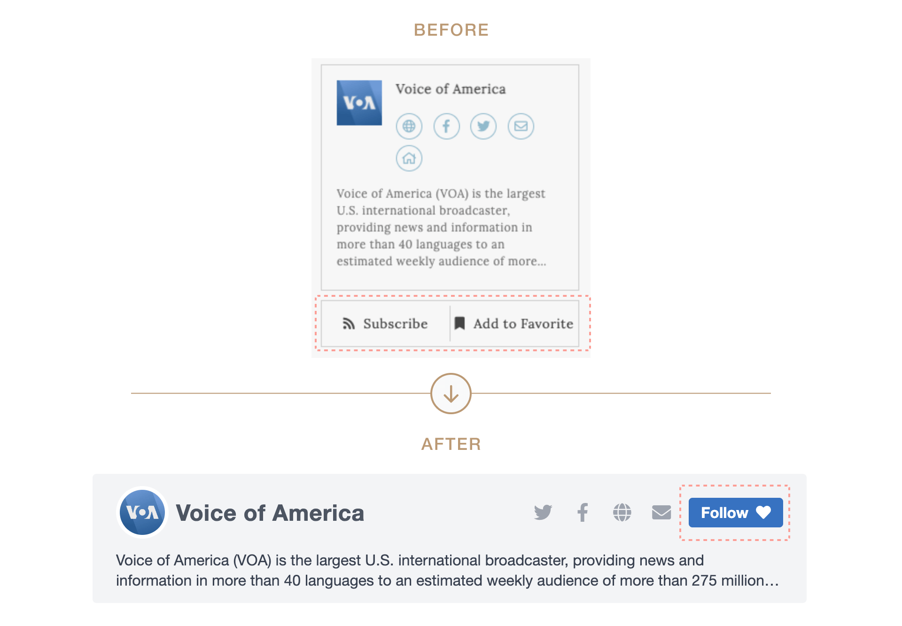
作者卡片優化前後對比
舊版 Subscribe 和 Add to Favorite 按鈕語意曖昧，分不清是訂閱文章還是追蹤作者，新版依重要程度重新排版，將 Add to Favorite改為 follow，Subscribe 按鈕移動到文章底部。
作者列表頁優化
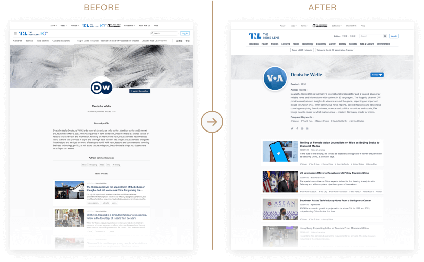
文章頁改版前後比對
舊版作者介紹面積較大，重點放在介紹作者，然而需求會議目標對焦時，釐清此區塊的目的在導引讀者閱讀該作者發表過的文章，作者介紹是其次，於是重新定義這頁的權重，縮短作者介紹以便更快的閱覽到下方的文章卡片。
狀態頁設計
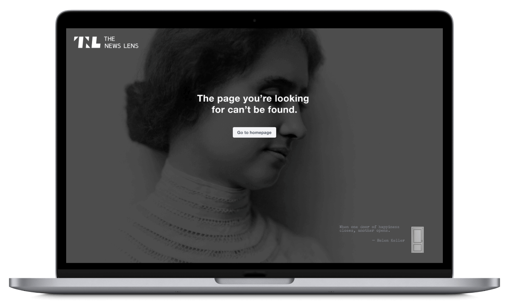
狀態頁 ERROR 404 設計
狀態頁 ERROR 404 設計，舊版採用海倫凱勒名言寓意通往幸福之門，新版延續此概念在畫面右下角添加一道門，滑鼠移入後門會打開增加趣味性。
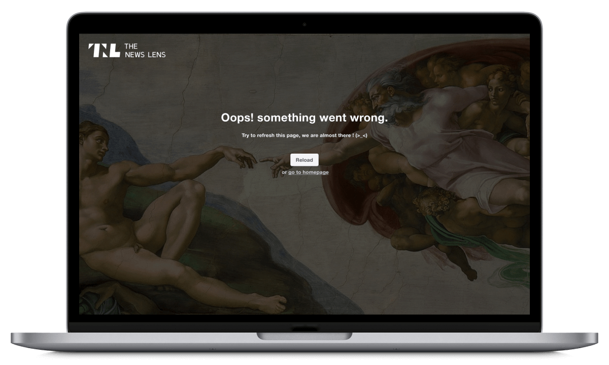
狀態頁 ERROR 500 設計
狀態頁 ERROR 500 設計：舊版沒有設計此頁面，新版延續人文風格，採用《創世紀》中的男子與先知寓意為網站與讀者之間的連結，解釋伺服器錯誤只是暫時的，精彩內容很快就會與讀者見面。